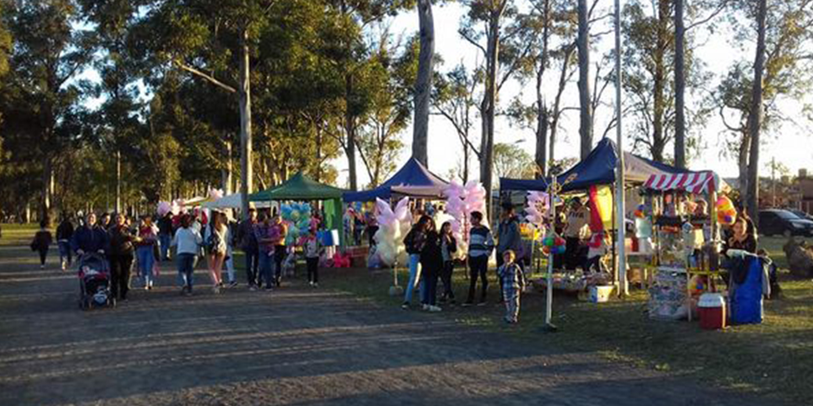
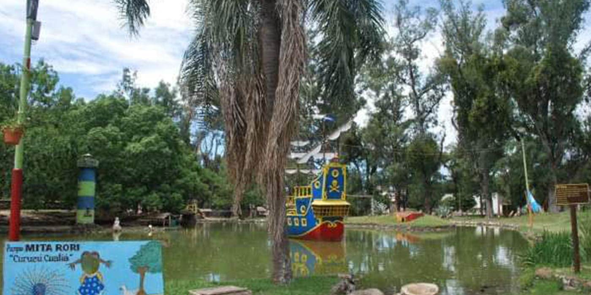

Es otro de los grandes espacios naturales arborizados que posee Curuzú Cuatiá, alberga el
camping
municipal y el
parque acuatico.

Parque Zambrana
Lleva su nombre en honor al juez comisario que fue autorizdo por el Virrey Avilés para crear
este
pueblo,
por lo que, junto a Tomás del Castillo delimitan y realizan la traza del terreno.

Parque Mitá Rori
El Parque Mitá Rori se encuentra dentro del Parque Mitre, su nombre significa "Rincón de
Niños" y fue creado en
1972.